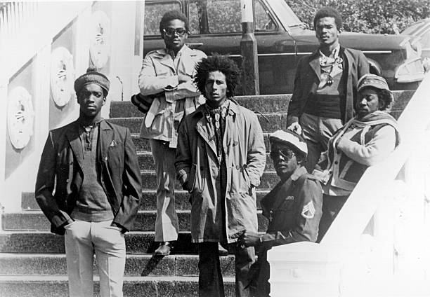
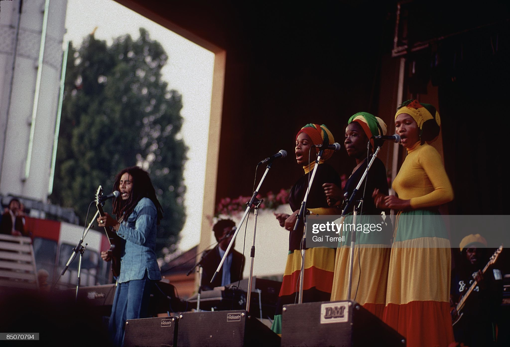

BOB MARLEY AND THE WAILERS
The Wailers are a reggae band formed by the remaining members of Bob Marley & the Wailers, following the
death of Bob Marley in 1981, Peter Tosh, and Bunny Wailler.

HISTORY
The band was formed by Bunny Wailer originally known as Bunny Livingston, Peter Tosh, and Bob Marley. Of all the three, Peter Tosh was the original leader who taught music to the other members and also taught Bob Marley how to play guitar. The Wailers began as Bunny Livingston, Peter Tosh and Bob Marley. Following the 1974 parting of The Wailers, Bob Marley proceeded with his group Bob Marley & The Wailers, with the Wailers Band as the backing band, and the I Threes (Rita Marley, Judy Mowatt, & Marcia Griffiths) as backup vocalists. The Wailers Band consisted of, among others, bassist Aston "Family Man" Barrett and his brother, drummer Carlton "Carly" Barrett, who had been members of Lee "Scratch" Perry's studio band, The Upsetters,[1] with whom The Wailers had recorded some of their most notable songs. After the death of Bob Marley in 1981, the Wailers Band was led by Aston Barrett and Junior Marvin. The band continued to play a heavy worldwide touring schedule. Carlton "Carly" Barrett, 36, was murdered at his Jamaica home in 1987. In 2008 former Wailers Al Anderson and Junior Marvin formed The Original Wailers, with the latter departing in 2011.
2010s-present: Reunion tour & new album
In 2014, The Wailers embarked on worldwide "Legend Tour", marking the 30th anniversary of the release of the best-selling reggae album of all time. In 2015, Aston "Familyman" Barrett began the process of reuniting past members of the Wailers. Shows occurred in South America which included past members such as Barrett, Al Anderson, and Tyrone Downie. The Wailers performed in India for the first time. A US and UK tour took place in 2016. On August 21, 2020, The Wailers released One World, their first studio album in over 25 years.[3] The album includes the single "One World, One Prayer", co-written and produced by Emilio Estefan, featuring Skip Marley, Farruko, Shaggy, and Cedella Marley.
Band Members
The Wailers Reunited (2016)

- Aston "Familyman" Barrett - bass
- Barrett Jr. - drums
- Junior Marvin - lead guitar, vocals
- Donald Kinsey - lead guitar
- Owen "Dreadie" Reid - rhythm guitar
- Josh David Barrett - lead vocals
- Javaughn Bond - keyboards
- Shema McGregor - vocals
- Aston "Familyman" Barrett - bass
- Aston Barrett Jr. - drums
- Donald Kinsey - lead guitar
- Owen "Dreadie" Reid - rhythm guitar
- Josh David Barrett - lead vocals
- Andres Lopez - keyboards
- Glen Dacosta - saxophone
- Junior Jazz - guitar
bob marley and the wailers songs
Live albums
- Legend Tour (Live) (1984)
- Lives On (Live) (1995)
- My Friends (Live '95-'97) (1997)
- Live at Maritime Hall (1999)
- Live In Jamaica (2001)
- Live (2003)
- Legend Live (2006)
Collaboration with other artists
- Reggae Vibration with Joe Yamanaka (1982)
- Reggae Vibration 2 with Joe Yamanaka (1983)
- It's About Time, with John Denver (1983)
- Reggae Vibration 3 with Joe Yamanaka (1984)
- Watchful Eyes Acclaimed LP for Jah Mel (1983)
- "Makisupa Policeman" for Sharin' in the Groove (2001)
- My Beautiful Garden, Donald & Lulu with The Wailers (1982)
- Jerusalem (Alpha Blondy album) (1986)
- Inkarnation, Iya Karna album with the Wailers (1986)
- Real Joy, Ludovic DeBarboza And The Wailers (1987)
- "A Step for Mankind" with Duane Stephenson & Bishop Lamont, Solutions for Dreamers: Season 3 (2010)
- HiFi Calypso, with Karl Zéro (2004)